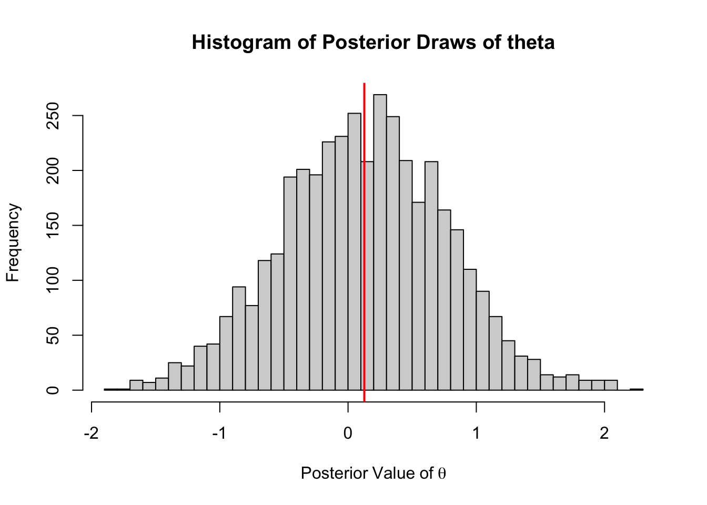

![]()
x <- c(1.0, -3.4, 2.8, -0.5, 4.7, -1.9, 0.8, 3.2, -5.2, -0.9)Introduction
I worked on something that started in R and then I wanted to speed it up. MCMC is generally a slow process in base R because it can’t be parallelised easily as each state depends on the previous state. Rcpp is a wonderful avenue to speed things up.
The problem
The purpose of this exercise is to build a Metropolis-Hastings sampler in R. The goal is to return the posterior mean of \(\theta\) given a vector of values, a likelihood function, and a prior distribution.
Data Generating Process
As always we hypothesise a likelihood function and then a prior.
Likelihood
\[f(x_i,...,x_n|\theta)=\frac{1}{\pi^n(1+\Pi_{i=1}^n(x_i-\theta)^2)} \ for \ -\infty<x<\infty\]
Prior Distribution
\[p(\theta)=\frac{1}{\sqrt{2\pi}}exp(-\theta^2/2)\]
Input Values
We have been provided the following draws from the distribution:
M-H Sampler
Now to build the Metropolis Hastings sampler we build the corresponding R functions.
prior <- function(theta){
1/sqrt(2*pi)*exp(-theta^2/2)
}And an associated check to make sure it is providing logical values:
(test_prior <- prior(theta = .1))[1] 0.3969525Then we build the likelihood function. In order to prevent integer underflow I have converted the function to log-likelihood. I then exponentiate the final value. The log-likelihood is then describved as
\[l(x_i,...x_n|\theta) = log(1) - (n\log(pi)+\Sigma_{i=1}^nlog(1+(x_i-\theta)^2))\]
The value from the log-likelihood can then be exponentiated in order to arrive at the likelihood.
likelihood <- function(x, theta){
if(!is.vector(x)){
stop("Please supply a vector to this function")
}
# Log-likelihood
a <- log(1)-(length(x)*log(pi) + sum(log(1+(x-theta)^2)))
# Convert to likelihood
exp(a)
}And finally we build the sampler.
theta_sampler <- function(x, niter, theta_start_val, theta_proposal_sd){
theta <- rep(0, niter)
theta[1] <- theta_start_val
for(i in 2:niter){
current_theta <- theta[i-1]
# Random Step
new_theta <- current_theta + rnorm(1,0, theta_proposal_sd)
# MH Ratio
r <- prior(theta = new_theta) * likelihood(theta = new_theta, x = x)/
(prior(theta = current_theta)* likelihood(theta = current_theta, x = x))
# Decide to keep proposed theta or take a step
if(runif(1)<r){
theta[i] <- new_theta
} else{
theta[i] <- current_theta
}
}
return(theta)
}We can then sample from the posterior distribution given the initial values and our data.
set.seed(336)
out <- theta_sampler(x = x, niter = 5000, theta_start_val = 0, theta_proposal_sd = .5)We can then graph our associated draws.
hist(out[1000:5000],
main = "Histogram of Posterior Draws of theta",
xlab = expression(Posterior~Value~of~theta),
breaks = 30)
abline(v = mean(out[1000:5000]), col = "red", lwd = 2)
The posterior mean of \(\theta\) is:
mean(out)[1] 0.1280924C++ Version
This is just an experiment to see if I can make the program a little faster using Rcpp.
C++ Code
This code is nearly identical to the R code, just utilising C++. Astute readers will see that I really could drop some of the constants in the prior and the likelihood function because they will fall out when calculating the MH ratio, r. Additionally, it is worth noting that I have converted the equations to a log scale to avoid computations on very small numbers.
writeLines(readLines("mh_sampler.cpp"))#include <Rcpp.h>
using namespace Rcpp;
// [[Rcpp::export]]
double Priorcpp(double theta) {
return 1/sqrt(2*M_PI)*exp(-pow(theta,2)/2);
}
// [[Rcpp::export]]
double Likelihoodcpp(NumericVector x, double theta) {
double likelihood;
double loglike;
int n = x.size();
loglike = log(1) - (n*log(M_PI)+sum(log(1+pow((x-theta),2))));
likelihood = exp(loglike);
return likelihood;
}
// [[Rcpp::export]]
NumericVector make_posterior(NumericVector x, int niter,
double theta_start_val, double theta_proposal_sd){
NumericVector theta(niter);
double current_theta;
double new_theta;
double r;
double rand_val;
double thresh;
theta[0] = theta_start_val;
for(int i = 1; i < niter; i++){
current_theta = theta[i-1];
rand_val = rnorm(1,0, theta_proposal_sd)[0];
new_theta = current_theta + rand_val;
r = Priorcpp(new_theta) * Likelihoodcpp(x, new_theta)/
(Priorcpp(current_theta)* Likelihoodcpp(x, current_theta));
thresh = runif(1)[0];
theta[i] = new_theta;
if(thresh<r){
theta[i] = new_theta;
} else{
theta[i] = current_theta;
}
}
return theta;
}Compilation and Testing
Now we need to compile the functions.
library(Rcpp)
Rcpp::sourceCpp("mh_sampler.cpp")First we meed to test that the prior and likelihood functions return equivalent values between base R and C++.
all.equal(
prior(theta = .1),
Priorcpp(theta = .1)
)[1] TRUESo Priors are returning the same values.
all.equal(
likelihood(x = x, .1),
Likelihoodcpp(x = x, theta = .1)
)[1] TRUEThe likelihoods are returning the samples values. Now we have confidence that our C++ function is returning the same values.
Inference using C++
Now we can go ahead and draw from the posterior distribution using our sampler.
set.seed(336)
out2 <- make_posterior(x = x, niter = 5000, theta_start_val = 0,
theta_proposal_sd = .5)
hist(out2[1000:5000],
main = "Histogram of Posterior Draws of theta",
xlab = expression(Posterior~Value~of~theta),
breaks = 30)
abline(v = mean(out2[1000:5000]), col = "red", lwd =2)The mean value, 0.127 is very similar to the base R version (some differences could be some differences in the random number generators used). However, we we compare the benchmark times we see that the C++ version of the sampler is roughly 20x faster.
Benchmarking Performance
microbenchmark::microbenchmark(
Rcpp = make_posterior(x = x, niter = 5000,
theta_start_val = 0, theta_proposal_sd = .5),
base= theta_sampler(x = x, niter = 5000,
theta_start_val = 0, theta_proposal_sd = .5))Unit: milliseconds
expr min lq mean median uq max neval cld
Rcpp 2.526245 3.195239 4.406052 3.833075 4.641132 15.83486 100 a
base 45.479338 55.770392 82.311837 68.692651 107.990967 167.98600 100 bReuse
Citation
BibTeX citation:
@online{dewitt2019,
author = {Michael DeWitt},
editor = {},
title = {Speeding {Things} {Up} with {Rcpp}},
date = {2019-04-04},
url = {https://michaeldewittjr.com/programming/2019-04-04-speeding-things-up-with-rcpp},
langid = {en}
}
For attribution, please cite this work as:
Michael DeWitt. 2019. “Speeding Things Up with Rcpp.” April
4, 2019. https://michaeldewittjr.com/programming/2019-04-04-speeding-things-up-with-rcpp.